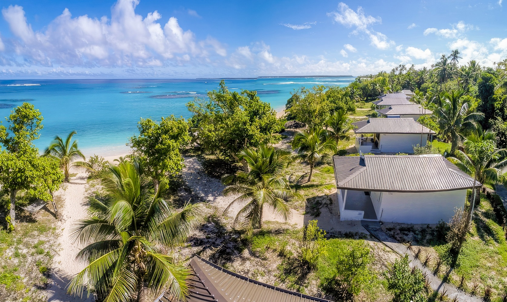
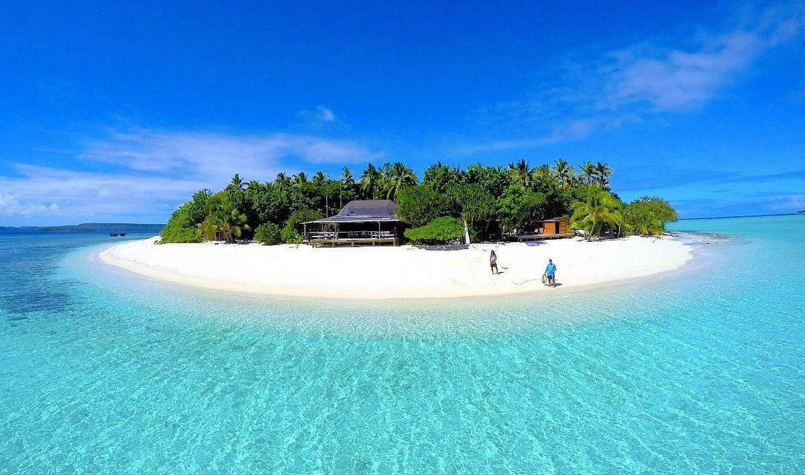
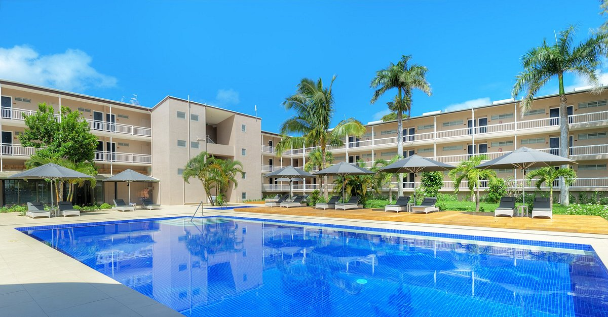
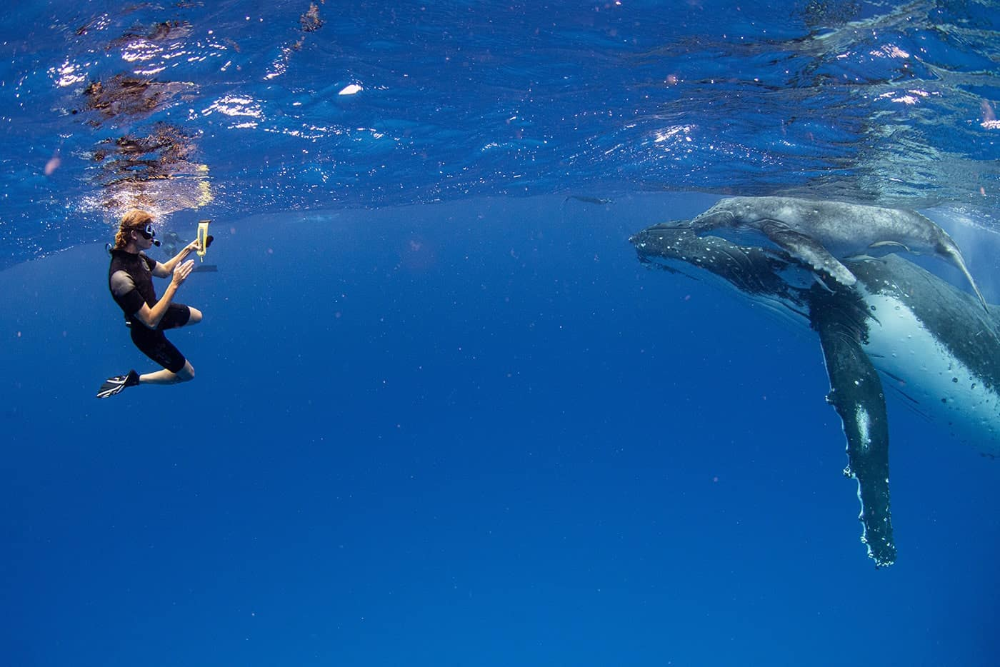

Top 5 Places to Stay in Tonga

Friendly Homestay – Nuku‘alofa
Warm hosts, home-cooked meals, and walking distance to town.

Tau Island
Tonga’s private islands are peaceful escapes surrounded by crystal-clear waters and untouched beaches.

Tanoa Hotel – Tongatapu
Comfortable, budget-friendly, and perfect for students or solo travelers.

Vava‘u Island Retreat
Experience the magic of Vava’u — swim alongside majestic humpback whales and create memories that last a lifetime!

Fafa Island Resort
Live like a local in this coastal village, with cultural immersion programs.